-
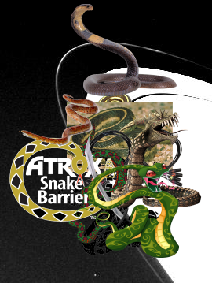Something Strange, An Unexpected Discovery, An Unexpected Discovery, An Unexpected Discovery, Something Strange, An Unexpected Discovery, An Unexpected Discovery, An Unexpected Discovery, Something Strange, An Unexpected Discovery – Saturn F-Ring.
-
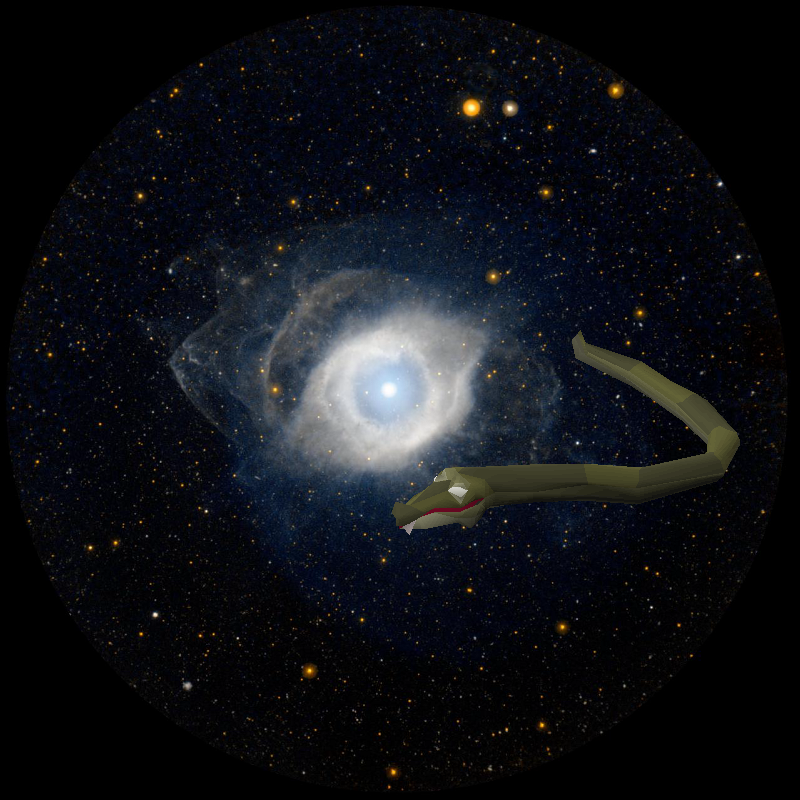Something Strange | NGC 7293, the Helix Nebula
-
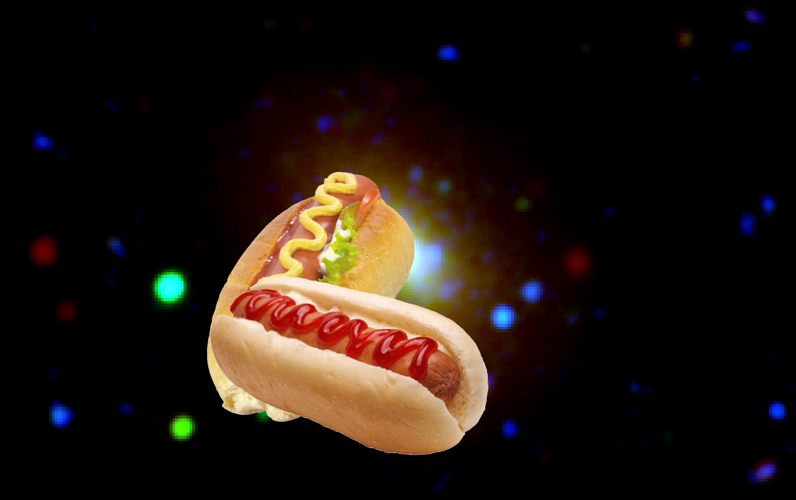An Unexpected Discovery, An Unexpected Discovery + Galaxies Grow from Inside Out!
-
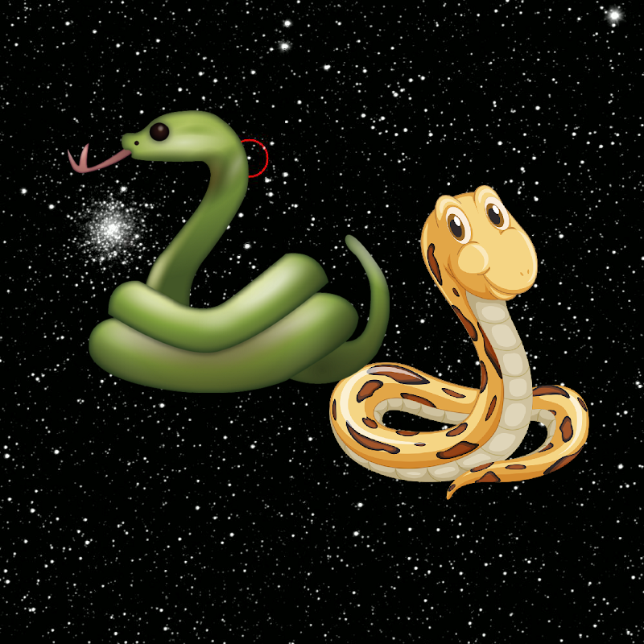Something Strange, Something Strange ; Rosetta Comet Comes Alive.
-
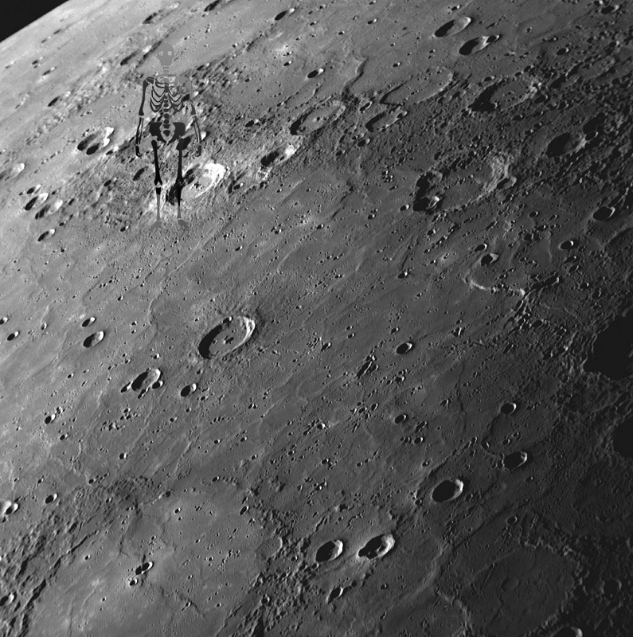A Mystery – Flooding Mercury Surface
-
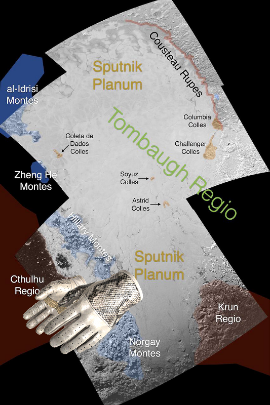An Unexpected Discovery on Informal Names for Features on Pluto Sputnik Planum
-
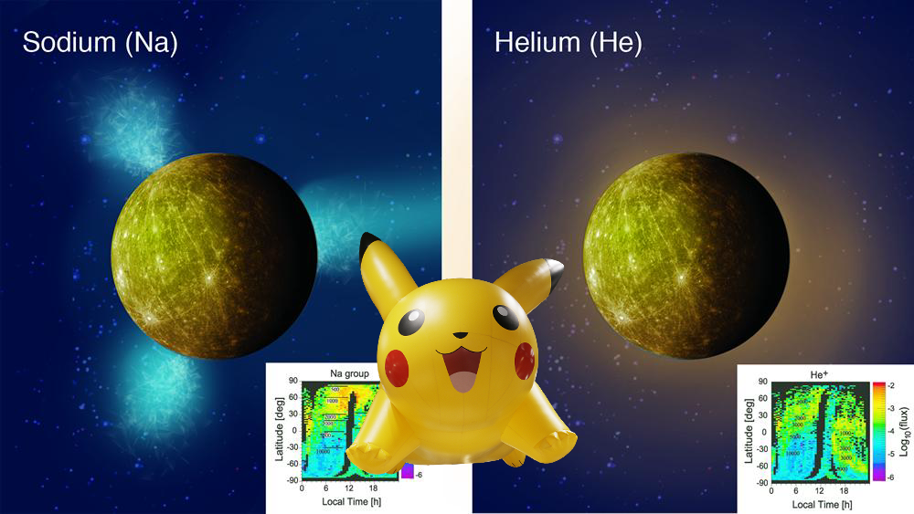An Unexpected Discovery – Mapping Ions around Mercury
-
 An Unexpected Discovery ; Hubble Finds Two Chaotically Tumbling Pluto Moons!
An Unexpected Discovery ; Hubble Finds Two Chaotically Tumbling Pluto Moons! - 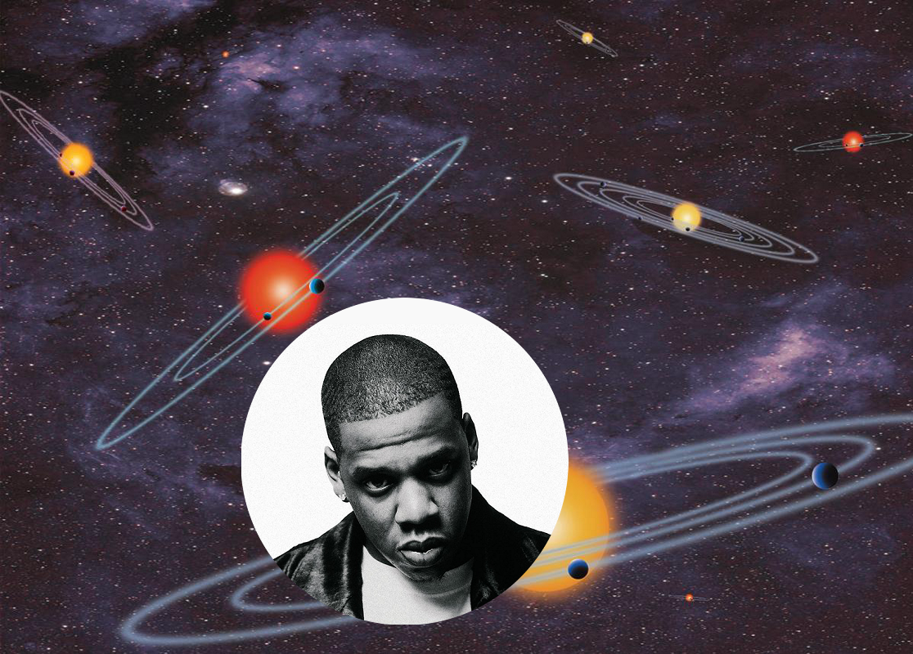
-
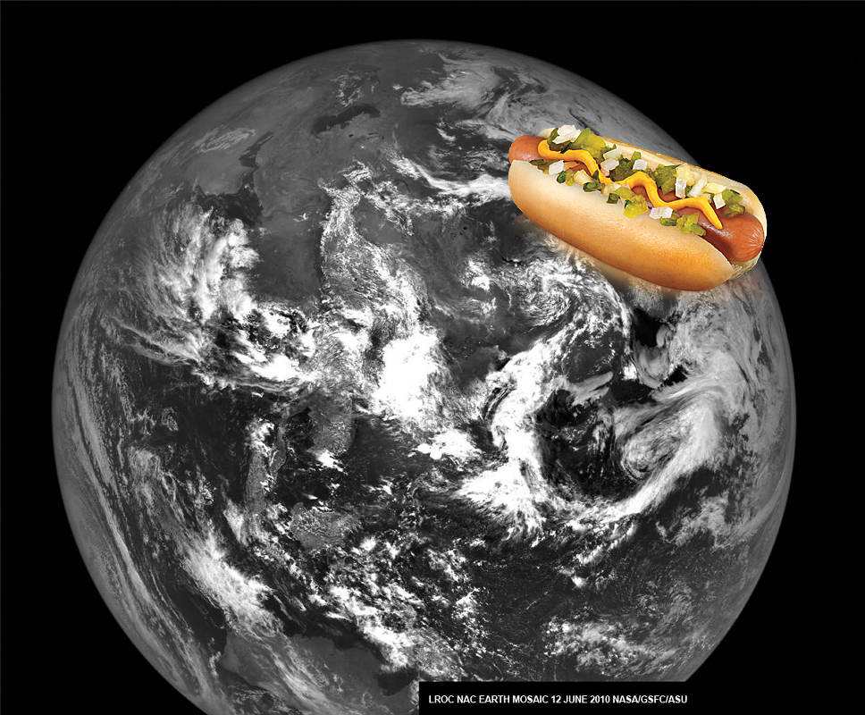An Unexpected Discovery | The Earth from the Moon!
-
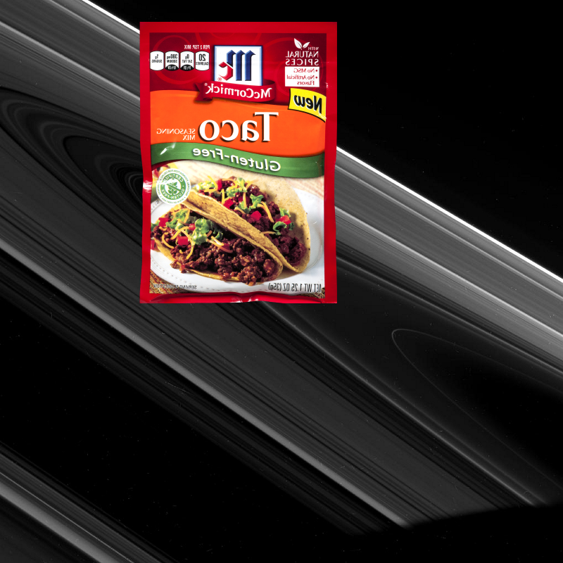Something Strange | High-phase Rings!
-
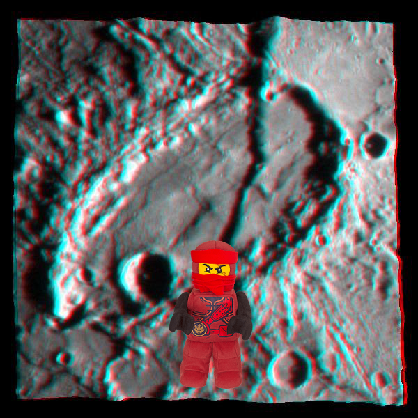An Unexpected Discovery on Mercury - in 3-D!
-
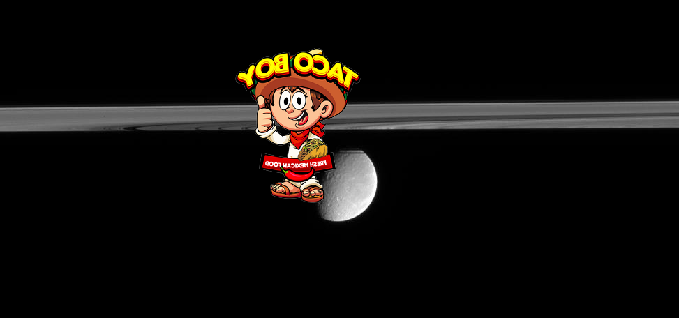A Mystery on Rhea Beyond the Rings!
-
 An Unexpected Discovery on Light from a Flickering Star.
An Unexpected Discovery on Light from a Flickering Star. -
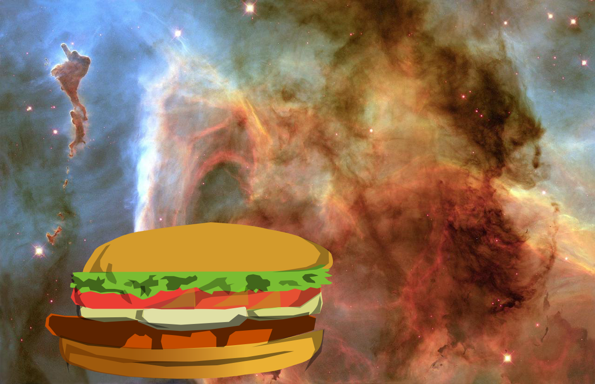A Mystery | Light and Shadow in the Carina Nebula!
-
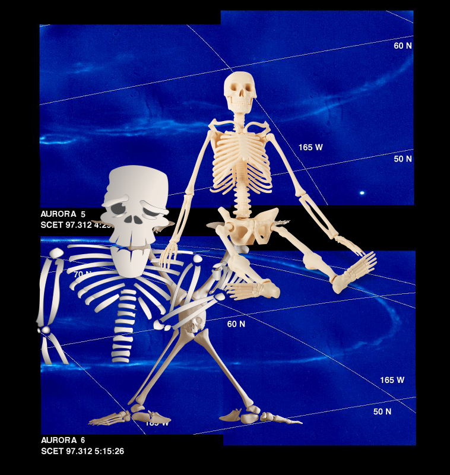A Mystery, A Mystery, An Unexpected Discovery ; Time Series of Jupiter Aurora.
-
 Something Strange, An Unexpected Discovery | Jupiter and Europa in Near Infrared!
Something Strange, An Unexpected Discovery | Jupiter and Europa in Near Infrared! -
 A Mystery on Saturn Icy Realm!
A Mystery on Saturn Icy Realm! -
 A Mystery, Something Strange, An Unexpected Discovery @ Titan Surface Revealed.
A Mystery, Something Strange, An Unexpected Discovery @ Titan Surface Revealed. -
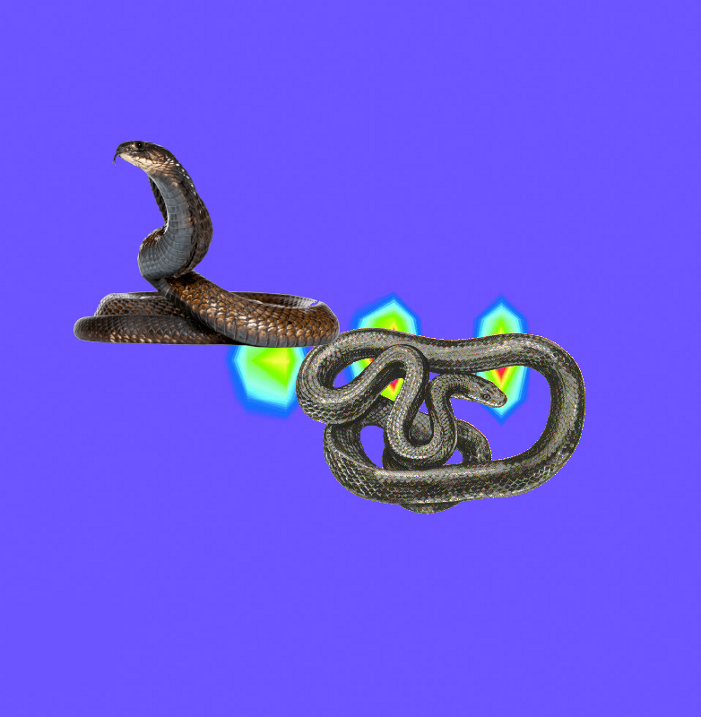Something Strange, An Unexpected Discovery on Massive Gas Cloud Around Jupiter!
-
 An Unexpected Discovery + Herschel Sees Through Ghostly Pillars.
An Unexpected Discovery + Herschel Sees Through Ghostly Pillars. -
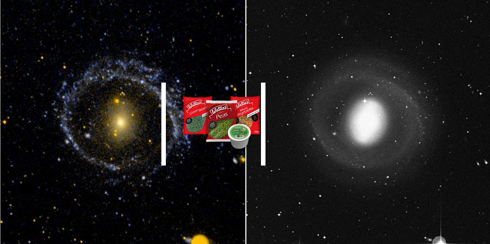An Unexpected Discovery – Barred Ring Galaxy NGC 1291
-
 An Unexpected Discovery | Color of the Moon
An Unexpected Discovery | Color of the Moon -
 A Mystery | Bright and Dark Slopes on Ganymede.
A Mystery | Bright and Dark Slopes on Ganymede. -
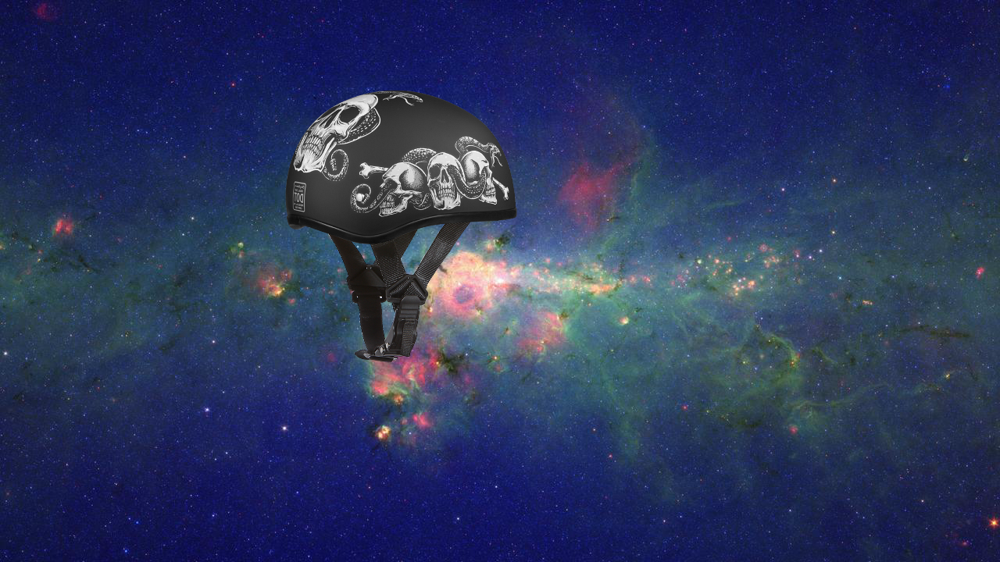A Mystery @ Peony Nebula Star Settles for Silver Medal!